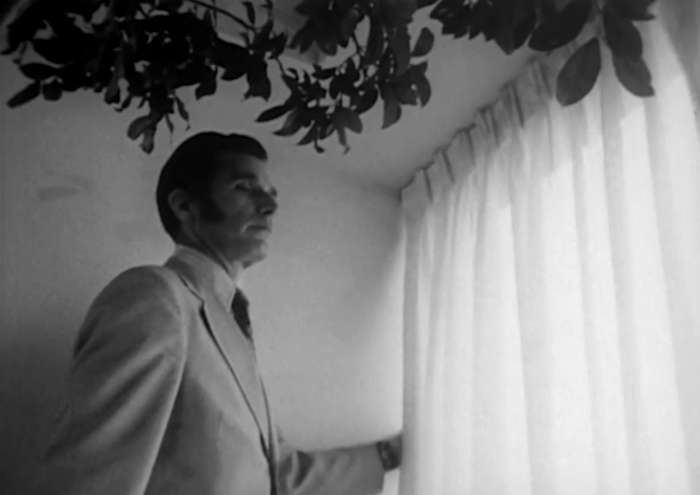

|
Transcript: The John Hancock Center was intended to give Chicago the world's tallest building, but aircraft flightpath regulations prevented that. Completed, it stands 16 feet shorter than New York's Empire State Building. The top 47 floors consist of apartments like this, which, with their luxurious fittings, are obviously not designed as a low cost housing project. |
||
|  | The view, of course, is spectacular. The building has its own post office for the 2000 perminent residents and for the office population, which swells to 10000 during the day. The valet shop provides laundry and dry cleaning services to the perminent residents. In fact, the building resembles an ocean liner, in that it contains nearly all the necessities for urban survival. | |
| While their wives shop at the fully stocked supermarket, the breadwinner puts in his working day on one of the 33 floors of offices below. And if junior is less than five years old he can be parked at a kindergarten a few floors from home, leaving momma to explore amongst the frozen peas, grapefruit, and wine to her heart's content. | ||
|
Continually immobilised by the ever-present hypnotic view, the need to exercise residents' rarely-used limbs has also been anticipated.
Still, the Hancock Center should not be taken lightly. |
||
| It has proven that with proper designing and consideration of human needs, a high rise building can be a good place for people to live in. |
{kind=link}
{kind=link}
{kind=link}
{kind=link}
{kind=link}